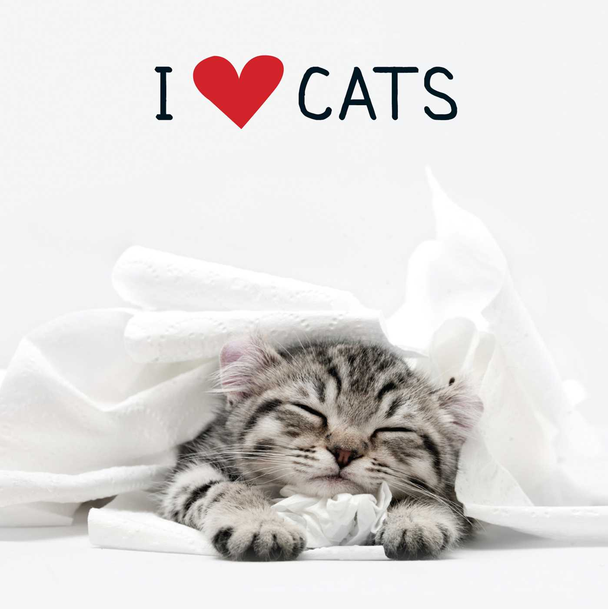

Nasza strona ma na celu promowanie adopcji bezdomnych kotów

W AdoptMeow kochamy koty i jesteśmy całkowicie przekonani o korzyściach, jakie płyną z faktu opieki
nad tymi zwierzętami dla ich właścicieli i dla całego społeczeństwa. Podczas gdy miłośnicy zwierząt nie mogliby
funkcjonować bez swoich ulubieńców i większość zwierząt na świecie jest kochana i zadbana, ze względu na czynniki
ekonomiczne i społeczne, tysiące kotów i innych zwierząt jest porzucanych co roku, a liczby te rosną. Rozumiemy,
że znajdujemy się w unikalnej sytuacji i mimo że jesteśmy już zaangażowani w szereg programów promujących adopcję zwierząt
za pośrednictwem współpracy i partnerstw, pragniemy skorzystać z naszych doświadczeń, by pomóc jeszcze większej liczbie
zwierząt w znalezieniu kochających domów.Zapraszamy do obejrzenia filmu, który pomoże Ci przygotować się do adopcji kociaka!